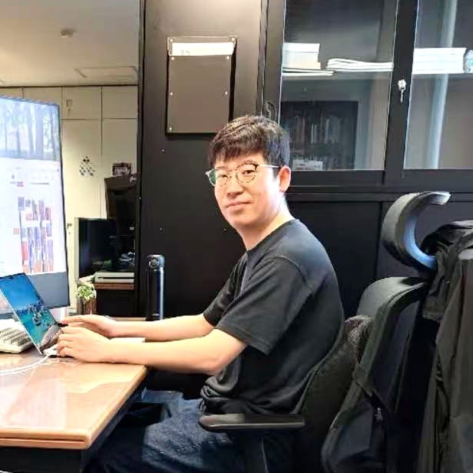

Guang Li 李 広
Assistant Professor at Hokkaido University.
Working on dataset distillation, data-efficient learning,
and generative modeling.

About Me
Hi, my name is Guang Li (李広). I am an Assistant Professor at the Education and Research Center for Mathematical and Data Science, Hokkaido University, and a member of the Laboratory of Media Dynamics.
I received dual bachelor's degrees in Software Engineering and Japanese from Dalian University of Technology in 2019, and my M.S. and Ph.D. degrees in Information Science from Hokkaido University in 2022 and 2023, under the supervision of Prof. Miki Haseyama and Prof. Takahiro Ogawa. I collaborate closely with Prof. Konstantinos N. Plataniotis at the University of Toronto.
I authored one of the earliest published papers in the dataset distillation field, maintain Awesome-Dataset-Distillation, and co-organized the first CVPR Workshop on Dataset Distillation and the first Dataset Distillation Challenge at ECCV. I received the 2024 IEEE Sapporo Young Professionals Best Researcher Award and the ICML 2026 Gold Reviewer Award, and serve as an Area Chair for ACM MM, MICCAI, and ICASSP. My research has been covered by Scientific American, Nikkei, and NHK.
Experience
- Hokkaido University Assistant Professor, Education and Research Center for Mathematical and Data Science Oct. 2023 – present
- Hokkaido University – Hitachi Joint Cooperative Support Program, Ph.D. Fellowship Apr. 2022 – Sep. 2023
Education
- Hokkaido University Ph.D., Information Science (early graduation, Dean's Award) Apr. 2022 – Sep. 2023
- Hokkaido University M.S., Information Science Apr. 2020 – Mar. 2022
- Dalian University of Technology B.S. Software Engineering & B.A. Japanese (dual degree, Outstanding Graduate) Sep. 2015 – Jun. 2019
News
Publications
Projects
The community-standard curated list of dataset distillation papers, code, and resources — maintained since 2022 with Bo Zhao and Tongzhou Wang.
Predictive but not plannable: reward-consistency auxiliary objectives for latent world models. Code, paper, and project page.
Invited Talks
Honors & Awards
Personal
Supervised Students
Funding
Media Coverage
+12 additional media coverages, including 北海道新聞 and Nikkei reports on AI + blue carbon research.
Academic Service
Workshop Organizer
- The Second Workshop on Curated Data for Efficient Learning, ECCV 2026
- The First Workshop on Curated Data for Efficient Learning, ICCV 2025
- The First Dataset Distillation Challenge, ECCV 2024
- The First Workshop on Dataset Distillation for Computer Vision, CVPR 2024
Area Chair
- ACM MM 2024, 2025, 2026
- MICCAI 2025
- ICASSP 2026
- MIDL 2025, 2026
- IJCNN 2025, 2026, 2027
- ISBI 2025
Program Committee
- NeurIPS · ICLR · ICML
- CVPR · ICCV · ECCV
- +15 conferences
Journal Reviewer
- IEEE TPAMI
- IJCV
- IEEE TIP
- +39 journals